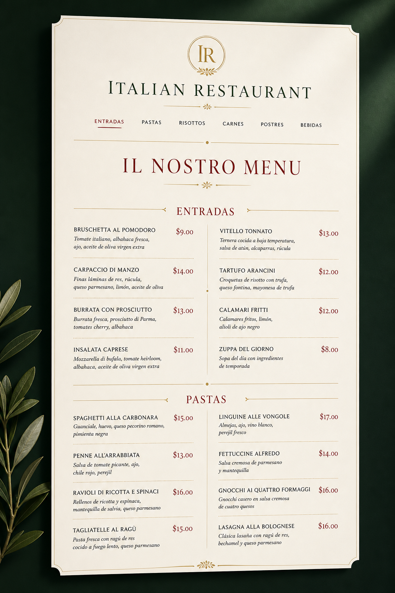
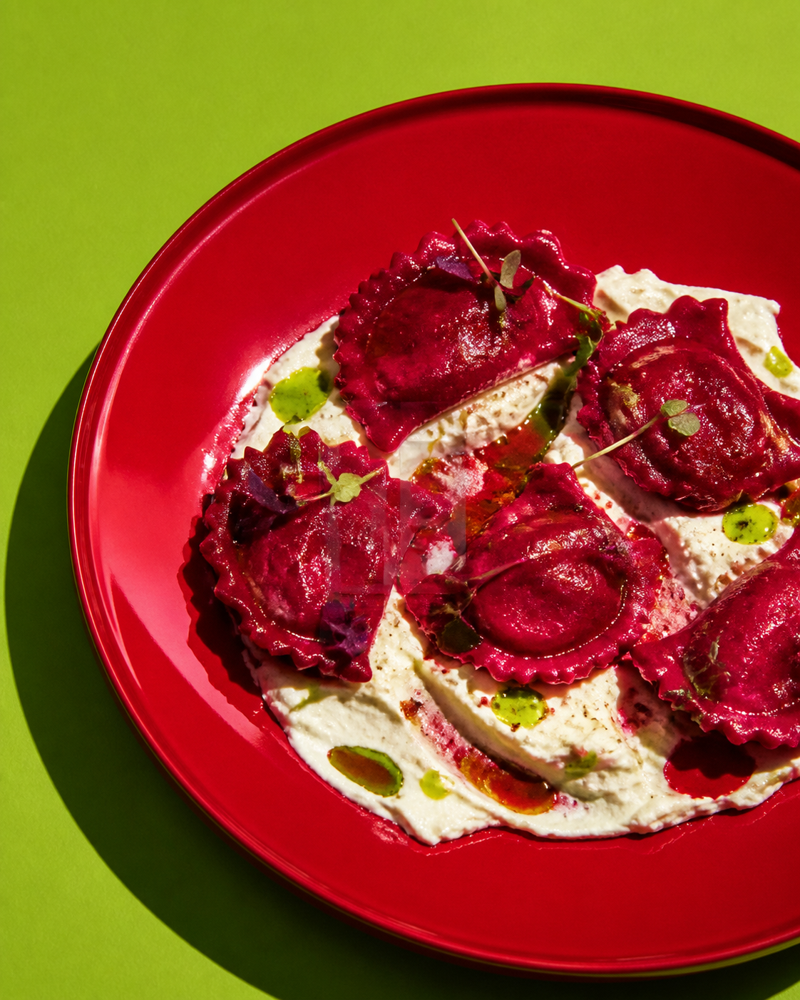
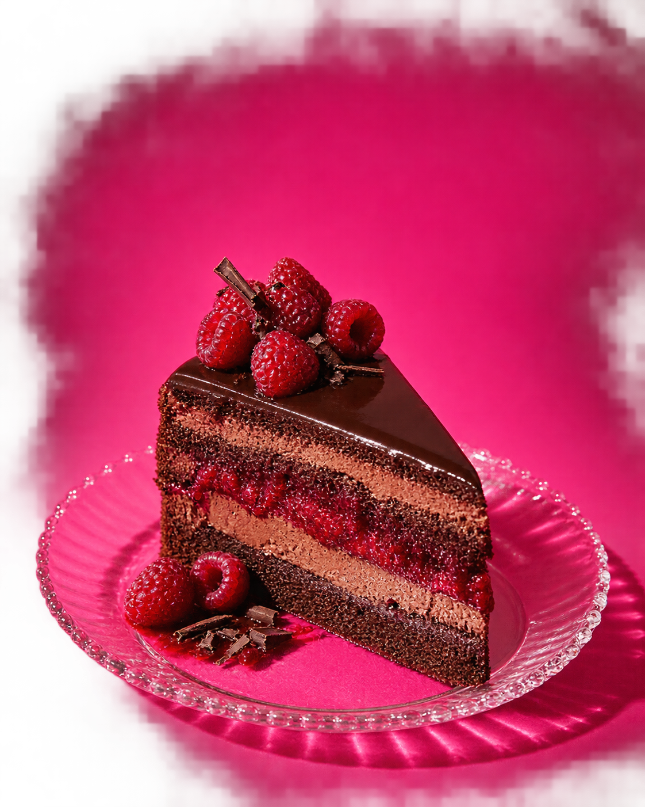
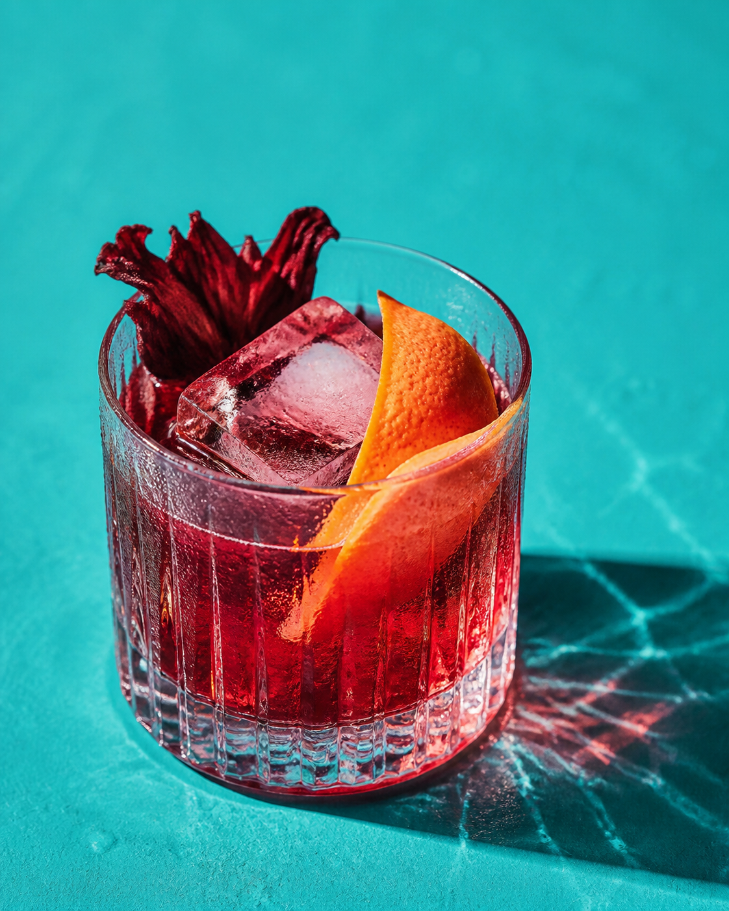

01 / Classic menu
Classic
Menu

02 / Menú inmersivo
Rojo vivo

03 / Dirección de arte
Noche mango

04 / Experiencia editorial
Mar eléctrico

05 / Carta de postres
Rosa cacao

06 / Menú de autor

01 / Classic menu

02 / Menú inmersivo
03 / Dirección de arte
04 / Experiencia editorial

05 / Carta de postres

06 / Menú de autor